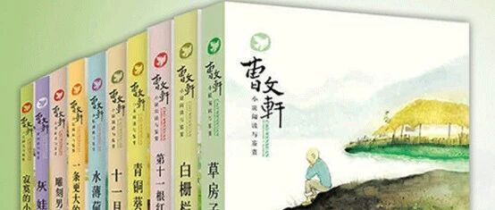

水星阅读 | 后知后觉的男孩 - 曹文轩系列
男孩子到了9岁左右，我个人觉得有一段书荒的时期。哈利波特这种科幻书，看完了，还有各种科学书，可怕的科学一类的，神奇校车各种，短小的故事书。还有那种获奖小说系列，这一类可以跨越从小孩子到有一点成熟的青少年时期的书，都看完了。怎么样到青少年时期呢？我觉得蛮难的。
红楼梦这一类的女孩子可以看看，男孩子还不太行。水浒，三国，西游记其实只是看个热闹。国外的小说系列，除了钢铁是怎么炼成的，其他的都还有点过于成熟，悲惨世界，巴黎圣母院什么的。。。
这时候，我有一次去学校找老师沟通孩子情况，老师说，你看那个谁谁谁，人家都看曹文轩的书了。我心里还是很羡慕的。
于是，我回家也买了一套，只是从来没有被翻起过。。。。直到2016年，那一年老师有一个课外读书的要求，开始翻开看了。结果，一发不可收拾，非常喜欢。

我买的时候，他还没有得奖，所以现在找不到当时那一套了。都差不多，我从京东找了一个图，就先这样吧。
他曾经给我详细的解释了一下，为什么喜欢曹。讲真，沈石溪和曹文轩他俩的写作风格，都有不同的人diss的，我个人也非常不喜沈石溪。但是对于孩子看他们的书，我个人觉得其实并没有太大所谓。就像我从小看柯南，我妈就十分反对，因为看到小黑她要做噩梦的，她担心我也要做噩梦，事实证明，我并没有做过什么噩梦。每人都有自己最爱的书和作者，都可以。
所以，我觉得喜欢看就是很好的进步，可以更进一步的看更多世界名著。而且，我自己感觉，曹文轩的书，更能让男孩子体会到一些细节的感情。比沈石溪的动物系列，好非常多。
我唯一有点遗憾的，就是，他喜欢看曹的书，但是作文风格依旧非常幼稚。。。但是想了想，其实也无所谓，估计这种孩子，善于议论文更多点吧。。。
ps：因为是后面写这一篇，所以可以补一点后续，他对曹的狂热维持到了预初以前，现在不太看了。确实有时间节点啊。。。